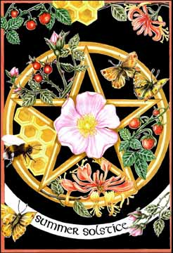
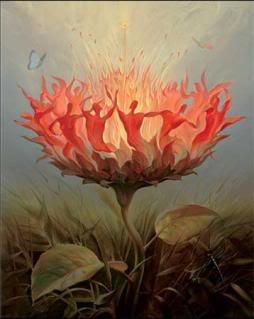

|

El 21 de junio el Sol entra en Cáncer alcanzando su punto máximo en el cielo. La tierra se sitúa lo más cerca posible del sol dentro de su curso. Es el día más largo del año y la noche más corta. El solsticio marca el inicio del verano en el calendario actual.
Litha es el antiguo nombre germánico para el verano y en el neopaganismo es considerado uno de los cuatro Sabbats menores. En este punto de la rueda del año
el Rey Roble (Dios de la Luz) le cede a su hermano el Rey Acebo (Dios de la oscuridad) el reinado durante la mitad restante del año.
Los romanos dedicaban esta fecha al dios Jano. Invocaban su protección y su bendición ante una partida, un regreso o cualquier inicio de actividad.
La cristiandad tomó a San Juan como sustituto del dios pagano. La noche de San Juan se celebra el 23 de junio. El folklore la reviste como una noche especial en la que tenemos más posibilidades de contactar con los duendes y las hadas.
El fuego es el elemento que no puede faltar en esta noche. Los celtas, los germanos y otros pueblos del norte de Europa encendían grandes hogueras y las mantenían durante toda la noche simbolizando la conquista de la luz, consiguiendo un día de tres días. En otras culturas las hogueras dieron paso a las antorchas o a las procesiones con candelas.
Se dice que las hogueras de los celtas también servían para que los poblados vecinos supieran que estaban celebrando la fiesta.
Antiguamente se creía que las plantas que florecían o germinaban durante el solsticio tenían mayor poder curativo, por lo que dedicaban esta noche a la recolecta de hierbas.
Es un buen momento para reflexionar sobre la exaltación y la decadencia de las cosas. Todo lo que sube, baja. Podemos preparar viajes o celebrar la llegada de los seres queridos. Realizar hechizos de protección y purificación.
Correspondencias
Colores: verde, amarillo, naranja.
Símbolos: círculo, espiral, cangrejo, cuernos.
Talismanes: joyas de oro, objetos amarillos y naranjas, amuletos de marfil o con forma de cuernos, semillas de helecho macho, achicoria secada al sol.
Flores: rosas, girasoles.
Alimentos: piñones, fresas
Hierbas: lavanda, verbena.
Actividades: saltar por encima del fuego, practicar la magia con seres elementales, bailar, hechizos de protección, adivinación, y purificación.

|
 RSS
RSS